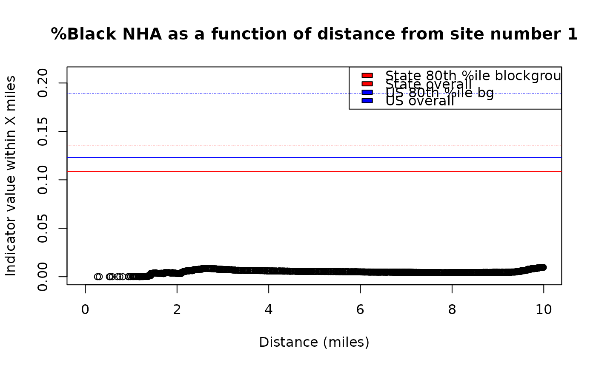
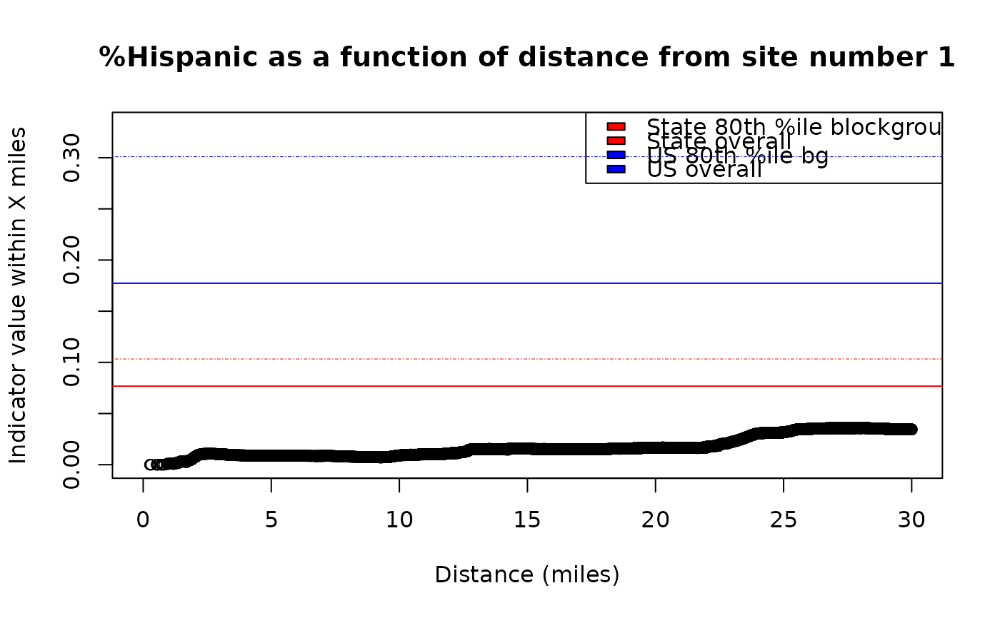

What percentage of this group's population lives less than X miles from a site? — *** DRAFT - NEED TO RECHECK CALCULATIONS
Source:R/plot_distance_by_pctd.R
plot_distance_by_pctd.Rd*** DRAFT - NEED TO RECHECK CALCULATIONS This plots the cumulative share of residents found within each distance, for a single population group.
Usage
plot_distance_by_pctd(
s2b = NULL,
sitenumber = 1,
score_colname = names_these[3],
scorewts_colname = "pop",
score_label = fixcolnames(score_colname, "r", "shortlabel"),
radius = 30
)Arguments
- s2b
output of
getblocksnearby(), or else can be a table of points with lat,lon columns and 1 row per point. If NULL (not provided as a parameter to the function), will prompt for a file to upload and use, if interactive() is TRUE, or else the function will just show an example using a random point.- sitenumber
If used, one number that is the unique ID (the row number of original list of points) to look at in s2b. This should be the same as the value of s2b$ejam_uniq_id for the site to be analyzed. Will be able to omit or set to NULL to use overall aggregate of all sites.
- score_colname
colname in blockgroupstats for an indicator to be aggregated across blocks and blockgroups as a weighted mean
- scorewts_colname
colname in blockgroupstats – like "pop" – for the weight to use in aggregating the scores referred to by score_colname
- score_label
optional friendly label for the variable
- radius
optional radius to use as maximum analyzed or shown – if s2b was provided, this caps what is used and only shorter radii get shown (only relevant if s2b had radii larger than this radius parameter) and if s2b is not provided, interactively RStudio user is prompted to provide latlon file to analyze in getblocksnearby() and radius is used in that.
Details
Also see ejamit_compare_distances() for a plot of several indicators at several distances!
This function uses the distance of each Census block from the site in conjunction with
the block group residential population data, to provide a relatively detailed picture of
how far away residents in each group live. In contrast, the function
distance_cdf_by_group_plot() is based on ejamit()$results_bybg_people,
which provides only block group resolution information about distance.
Examples
# Example of area where %Black is
# very high within 1 mile but drops by 3 miles away
pts = testpoints_100[3,]
plot_distance_by_pctd(
getblocksnearby(pts, radius = 10, quiet = T),
score_colname = "pctnhba")
#> Warning: aggregate of multiple sites not yet implemented - using site #1
#> Analyzing 1 points, radius of 10 miles around each.

#> Index: <ejam_uniq_id>
#> bgid ejam_uniq_id blockid distance blockwt distance_unadjusted
#> <int> <int> <int> <num> <num> <num>
#> 1: 187138 1 6179733 0.2643867 0.003177966 0.2643867
#> 2: 187138 1 6179731 0.3041297 0.018008475 0.3041297
#> 3: 187138 1 6179734 0.5242682 0.005296610 0.5242682
#> 4: 187138 1 6179721 0.5424342 0.221398305 0.5424342
#> 5: 187138 1 6179720 0.5875761 0.085805085 0.5875761
#> ---
#> 1368: 187128 1 6179166 9.9673004 0.036414566 9.9673004
#> 1369: 187205 1 6182570 9.9679871 0.019101124 9.9679871
#> 1370: 187168 1 6181251 9.9747066 0.038843722 9.9747066
#> 1371: 184226 1 6070291 9.9794941 0.021573604 9.9794941
#> 1372: 187182 1 6181861 9.9911461 0.003802281 9.9911461
#> pctnhba pop scorewts scores wtdmean_within
#> <num> <num> <num> <num> <num>
#> 1: 0.00000000 873 873 0.00000000 0.000000000
#> 2: 0.00000000 873 873 0.00000000 0.000000000
#> 3: 0.00000000 873 873 0.00000000 0.000000000
#> 4: 0.00000000 873 873 0.00000000 0.000000000
#> 5: 0.00000000 873 873 0.00000000 0.000000000
#> ---
#> 1368: 0.00000000 681 681 0.00000000 0.009531812
#> 1369: 0.17471737 973 973 0.17471737 0.009616631
#> 1370: 0.01736385 1267 1267 0.01736385 0.009627151
#> 1371: 0.00000000 741 741 0.00000000 0.009622907
#> 1372: 0.06965174 1407 1407 0.06965174 0.009631762
#browseURL(url_ejscreen_report(lat = pts$lat, lon = pts$lon, radius = 0.5))
#browseURL(url_ejscreen_report(lat = pts$lat, lon = pts$lon, radius = 3))
# Example of area that has higher %Hispanic as you go
# 10 to 30 miles away from this specific point
pts = data.table(lat = 45.75464, lon = -94.36791)
#> Error in data.table(lat = 45.75464, lon = -94.36791): could not find function "data.table"
plot_distance_by_pctd(pts,
sitenumber = 1, score_colname = "pcthisp")
#> Analyzing 1 points, radius of 30 miles around each.

#> Index: <ejam_uniq_id>
#> bgid ejam_uniq_id blockid distance blockwt distance_unadjusted
#> <int> <int> <int> <num> <num> <num>
#> 1: 187138 1 6179733 0.2643867 0.003177966 0.2643867
#> 2: 187138 1 6179731 0.3041297 0.018008475 0.3041297
#> 3: 187138 1 6179734 0.5242682 0.005296610 0.5242682
#> 4: 187138 1 6179721 0.5424342 0.221398305 0.5424342
#> 5: 187138 1 6179720 0.5875761 0.085805085 0.5875761
#> ---
#> 15730: 184186 1 6068740 29.9953022 0.005107252 29.9953022
#> 15731: 171499 1 5535848 29.9969425 0.111866502 29.9969425
#> 15732: 171420 1 5533382 29.9976559 0.002803738 29.9976559
#> 15733: 174003 1 5619136 29.9987164 0.006139678 29.9987164
#> 15734: 184161 1 6067284 29.9989281 0.011421320 29.9989281
#> pcthisp pop scorewts scores wtdmean_within
#> <num> <num> <num> <num> <num>
#> 1: 0.00000000 873 873 0.00000000 0.00000000
#> 2: 0.00000000 873 873 0.00000000 0.00000000
#> 3: 0.00000000 873 873 0.00000000 0.00000000
#> 4: 0.00000000 873 873 0.00000000 0.00000000
#> 5: 0.00000000 873 873 0.00000000 0.00000000
#> ---
#> 15730: 0.01766438 1019 1019 0.01766438 0.03446624
#> 15731: 0.02892341 1867 1867 0.02892341 0.03446443
#> 15732: 0.05194805 2233 2233 0.05194805 0.03446460
#> 15733: 0.06814701 1306 1306 0.06814701 0.03446502
#> 15734: 0.00000000 801 801 0.00000000 0.03446453
# browseURL(url_ejscreen_report(lat = pts$lat, lon = pts$lon, radius = 10))
# browseURL(url_ejscreen_report(lat = pts$lat, lon = pts$lon, radius = 30))